Introduction
This vignette demonstrates various visualization strategies for scPharm analysis results. Effective visualization is crucial for interpreting pharmacological heterogeneity at single-cell resolution.
Simulated Analysis Results
For demonstration, we create simulated scPharm results.
set.seed(42)
n_cells <- 500
# Simulate UMAP coordinates
umap_data <- data.frame(
UMAP1 = c(rnorm(200, -3, 1), rnorm(150, 3, 1), rnorm(150, 0, 1.5)),
UMAP2 = c(rnorm(200, 2, 1), rnorm(150, 2, 1), rnorm(150, -2, 1.2)),
cell_label = c(rep("tumor", 350), rep("adjacent", 150)),
drug_label = c(
rep("sensitive", 150), rep("resistant", 100), rep("other", 100),
sample(c("sensitive", "resistant", "other"), 150,
replace = TRUE, prob = c(0.1, 0.1, 0.8))
),
NES = c(
rnorm(150, 1.5, 0.4), # Sensitive tumor
rnorm(100, -1.2, 0.4), # Resistant tumor
rnorm(100, 0, 0.5), # Other tumor
rnorm(150, 0, 0.6) # Adjacent
),
cell_id = paste0("Cell_", 1:n_cells)
)
# Drug ranking data
drug_ranking <- data.frame(
DRUG_NAME = c("Docetaxel", "Paclitaxel", "Erlotinib", "Gefitinib",
"Tamoxifen", "Cisplatin", "Doxorubicin", "Imatinib"),
Dr = c(0.15, 0.22, 0.35, 0.42, 0.55, 0.61, 0.72, 0.85),
Dse = c(0.25, 0.18, 0.45, 0.32, 0.12, 0.55, 0.48, 0.22),
sensitive_pct = c(0.42, 0.38, 0.32, 0.28, 0.22, 0.20, 0.15, 0.08)
)1. Cell Type Distribution
UMAP with Cell Labels
ggplot(umap_data, aes(x = UMAP1, y = UMAP2, color = cell_label)) +
geom_point(size = 1.5, alpha = 0.7) +
scale_color_manual(
values = c("tumor" = scpharm_colors$tumor,
"adjacent" = scpharm_colors$adjacent),
name = "Cell Type"
) +
labs(
title = "Cell Type Distribution",
subtitle = "Tumor vs Adjacent cells identified by CNV analysis",
x = "UMAP 1", y = "UMAP 2"
) +
theme_minimal() +
theme(
plot.title = element_text(face = "bold", size = 14),
legend.position = "right"
) +
guides(color = guide_legend(override.aes = list(size = 4)))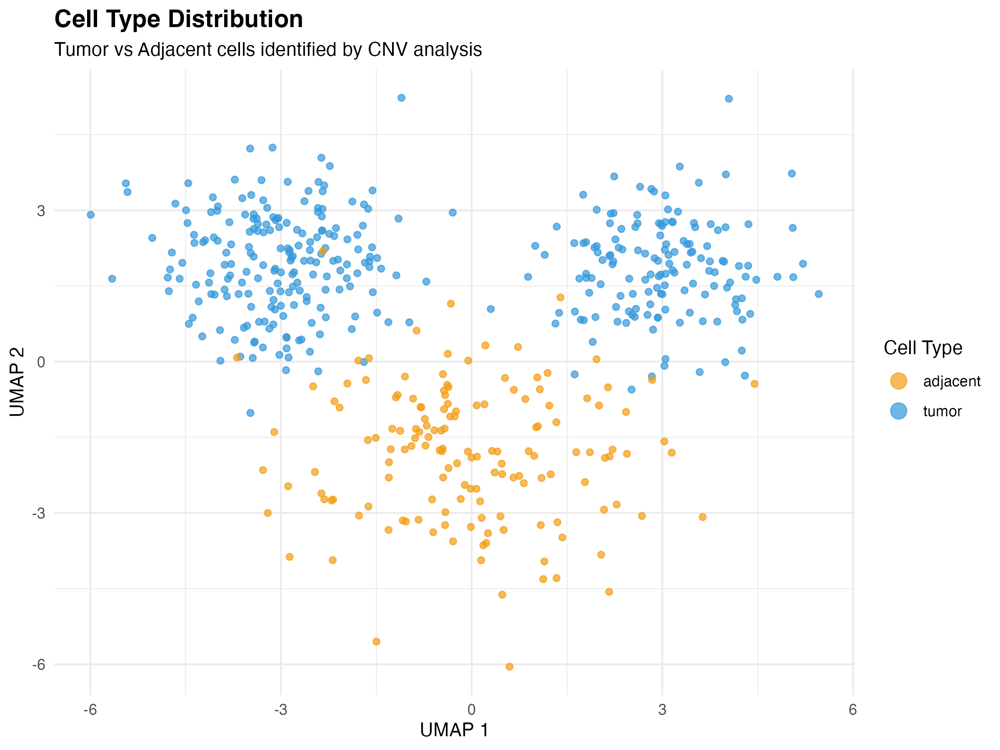
UMAP visualization colored by cell type
UMAP with Drug Response
ggplot(umap_data, aes(x = UMAP1, y = UMAP2, color = drug_label)) +
geom_point(size = 1.5, alpha = 0.7) +
scale_color_manual(
values = c("sensitive" = scpharm_colors$sensitive,
"resistant" = scpharm_colors$resistant,
"other" = scpharm_colors$other),
name = "Drug Response"
) +
labs(
title = "Pharmacological Subpopulations",
subtitle = "Drug sensitivity classification for Docetaxel",
x = "UMAP 1", y = "UMAP 2"
) +
theme_minimal() +
theme(
plot.title = element_text(face = "bold", size = 14),
legend.position = "right"
) +
guides(color = guide_legend(override.aes = list(size = 4)))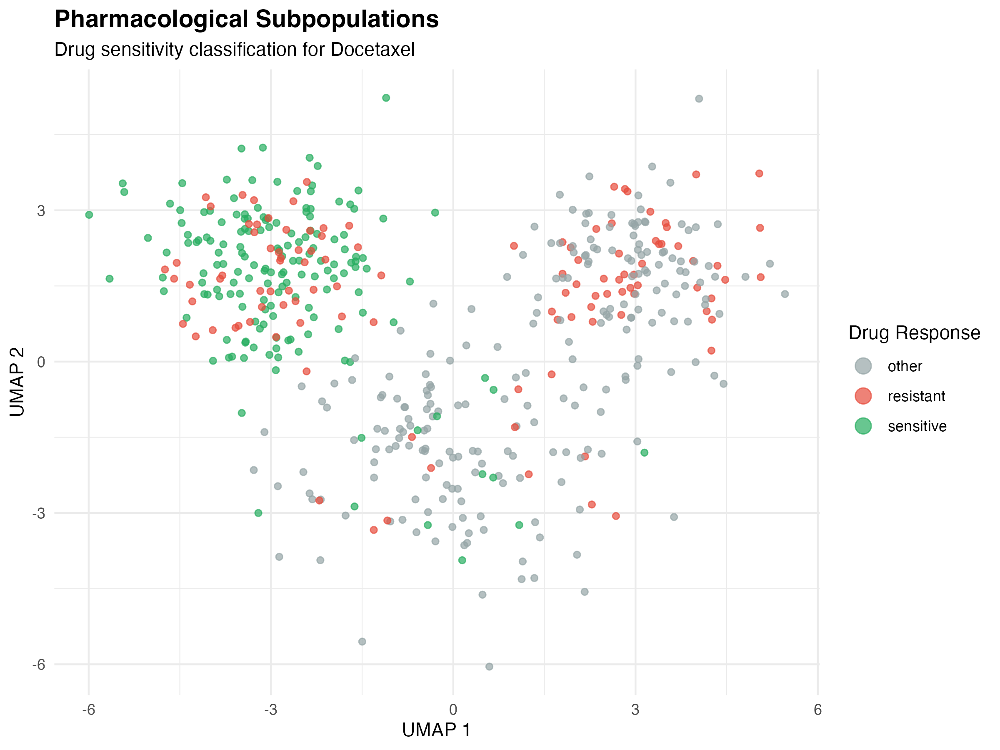
UMAP visualization colored by drug response
UMAP with NES Values
ggplot(umap_data, aes(x = UMAP1, y = UMAP2, color = NES)) +
geom_point(size = 1.5, alpha = 0.8) +
scale_color_gradient2(
low = scpharm_colors$resistant,
mid = "white",
high = scpharm_colors$sensitive,
midpoint = 0,
name = "NES"
) +
labs(
title = "Drug Sensitivity Enrichment",
subtitle = "Normalized Enrichment Score (NES) distribution",
x = "UMAP 1", y = "UMAP 2"
) +
theme_minimal() +
theme(
plot.title = element_text(face = "bold", size = 14),
legend.position = "right"
)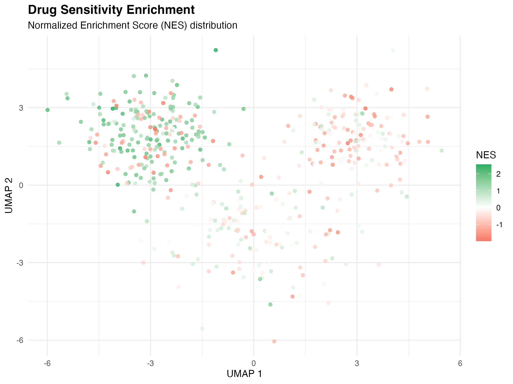
UMAP visualization colored by NES
2. NES Distribution Analysis
Histogram by Cell Type
ggplot(umap_data, aes(x = NES, fill = cell_label)) +
geom_histogram(bins = 40, alpha = 0.7, position = "identity") +
geom_vline(xintercept = c(-1, 1), linetype = "dashed", alpha = 0.5) +
scale_fill_manual(
values = c("tumor" = scpharm_colors$tumor,
"adjacent" = scpharm_colors$adjacent),
name = "Cell Type"
) +
annotate("text", x = -1.5, y = 40, label = "Resistant\nThreshold",
size = 3, color = "gray40") +
annotate("text", x = 1.5, y = 40, label = "Sensitive\nThreshold",
size = 3, color = "gray40") +
labs(
title = "NES Distribution by Cell Type",
x = "Normalized Enrichment Score (NES)",
y = "Count"
) +
theme_minimal() +
theme(plot.title = element_text(face = "bold", size = 14))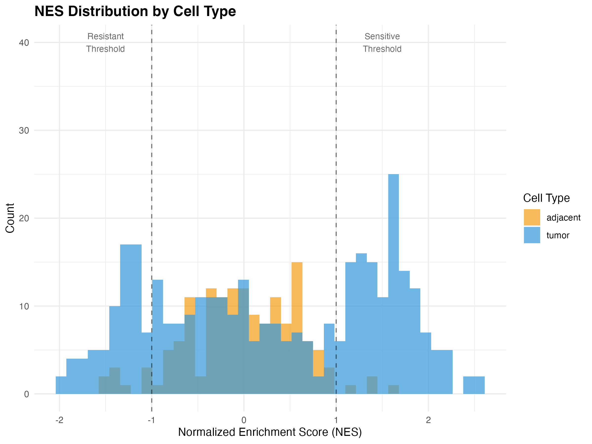
NES distribution histogram
Density Plot
tumor_data <- umap_data[umap_data$cell_label == "tumor", ]
ggplot(tumor_data, aes(x = NES, fill = drug_label, color = drug_label)) +
geom_density(alpha = 0.4, size = 1) +
scale_fill_manual(
values = c("sensitive" = scpharm_colors$sensitive,
"resistant" = scpharm_colors$resistant,
"other" = scpharm_colors$other),
name = "Classification"
) +
scale_color_manual(
values = c("sensitive" = scpharm_colors$sensitive,
"resistant" = scpharm_colors$resistant,
"other" = scpharm_colors$other),
name = "Classification"
) +
labs(
title = "NES Density Distribution (Tumor Cells)",
x = "Normalized Enrichment Score (NES)",
y = "Density"
) +
theme_minimal() +
theme(plot.title = element_text(face = "bold", size = 14))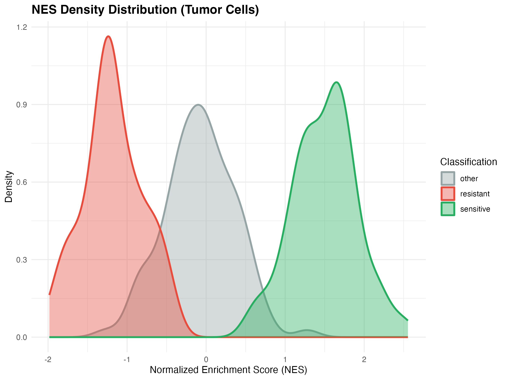
NES density by drug response classification
Violin Plot
ggplot(umap_data, aes(x = interaction(cell_label, drug_label),
y = NES, fill = drug_label)) +
geom_violin(alpha = 0.7, scale = "width") +
geom_boxplot(width = 0.2, outlier.size = 0.5, alpha = 0.8) +
scale_fill_manual(
values = c("sensitive" = scpharm_colors$sensitive,
"resistant" = scpharm_colors$resistant,
"other" = scpharm_colors$other),
name = "Drug Response"
) +
labs(
title = "NES Distribution by Cell Type and Drug Response",
x = "Cell Type × Drug Response",
y = "NES"
) +
theme_minimal() +
theme(
plot.title = element_text(face = "bold", size = 14),
axis.text.x = element_text(angle = 45, hjust = 1)
)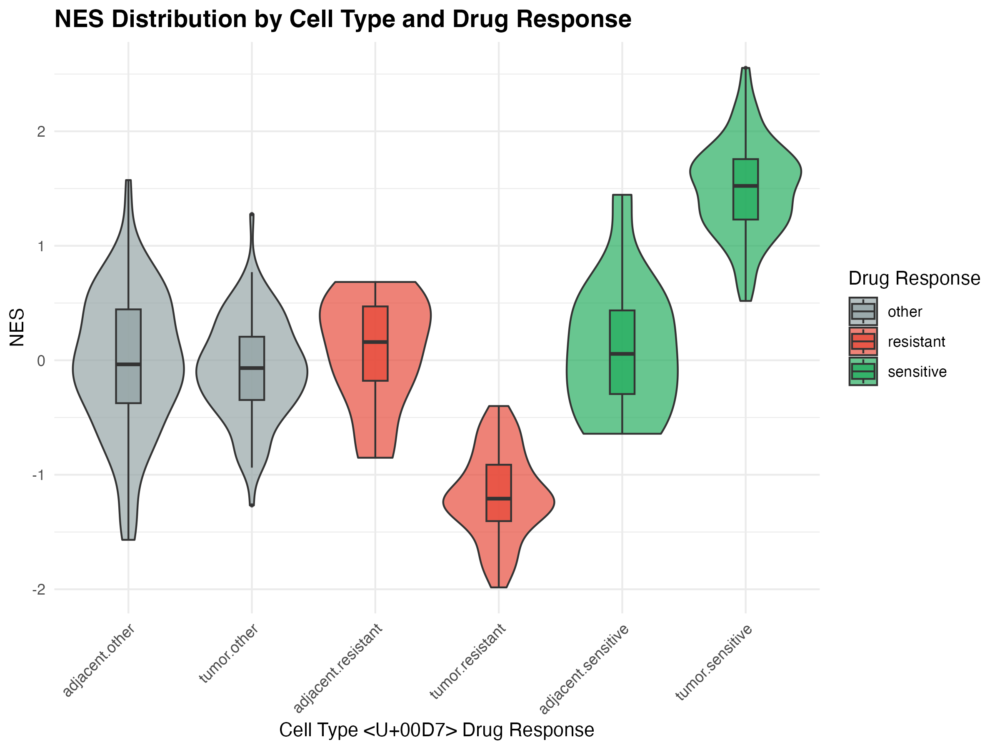
NES violin plot by cell type and drug response
3. Drug Prioritization Visualization
Bar Plot of Dr Scores
drug_ranking <- drug_ranking[order(drug_ranking$Dr), ]
drug_ranking$DRUG_NAME <- factor(drug_ranking$DRUG_NAME,
levels = drug_ranking$DRUG_NAME)
ggplot(drug_ranking, aes(x = DRUG_NAME, y = Dr, fill = Dr)) +
geom_col(width = 0.7) +
geom_text(aes(label = sprintf("%.2f", Dr)),
vjust = -0.5, size = 3.5) +
scale_fill_gradient(low = scpharm_colors$sensitive,
high = scpharm_colors$resistant,
name = "Dr Score") +
labs(
title = "Drug Prioritization Ranking",
subtitle = "Lower Dr score indicates better drug candidate",
x = "Drug",
y = "Drug Prioritization Score (Dr)"
) +
theme_minimal() +
theme(
plot.title = element_text(face = "bold", size = 14),
axis.text.x = element_text(angle = 45, hjust = 1)
) +
coord_cartesian(ylim = c(0, 1))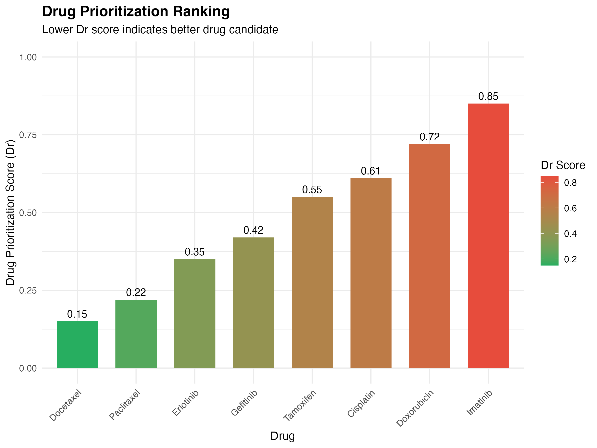
Drug prioritization ranking
Dr vs Dse Scatter Plot
ggplot(drug_ranking, aes(x = Dr, y = Dse, label = DRUG_NAME)) +
geom_point(aes(size = sensitive_pct, color = Dr), alpha = 0.8) +
geom_text(vjust = -1.2, size = 3.5) +
geom_hline(yintercept = 0.3, linetype = "dashed", alpha = 0.5) +
geom_vline(xintercept = 0.4, linetype = "dashed", alpha = 0.5) +
scale_color_gradient(low = scpharm_colors$sensitive,
high = scpharm_colors$resistant,
name = "Dr Score") +
scale_size_continuous(range = c(3, 12), name = "Sensitive %") +
annotate("rect", xmin = 0, xmax = 0.4, ymin = 0, ymax = 0.3,
fill = scpharm_colors$sensitive, alpha = 0.1) +
annotate("text", x = 0.2, y = 0.15, label = "Optimal\nRegion",
size = 4, fontface = "bold", color = scpharm_colors$sensitive) +
labs(
title = "Drug Efficacy vs Side Effects",
subtitle = "Optimal drugs: low Dr (effective) and low Dse (safe)",
x = "Drug Prioritization Score (Dr)",
y = "Drug Side Effect Score (Dse)"
) +
theme_minimal() +
theme(
plot.title = element_text(face = "bold", size = 14),
legend.position = "right"
) +
coord_cartesian(xlim = c(0, 1), ylim = c(0, 0.7))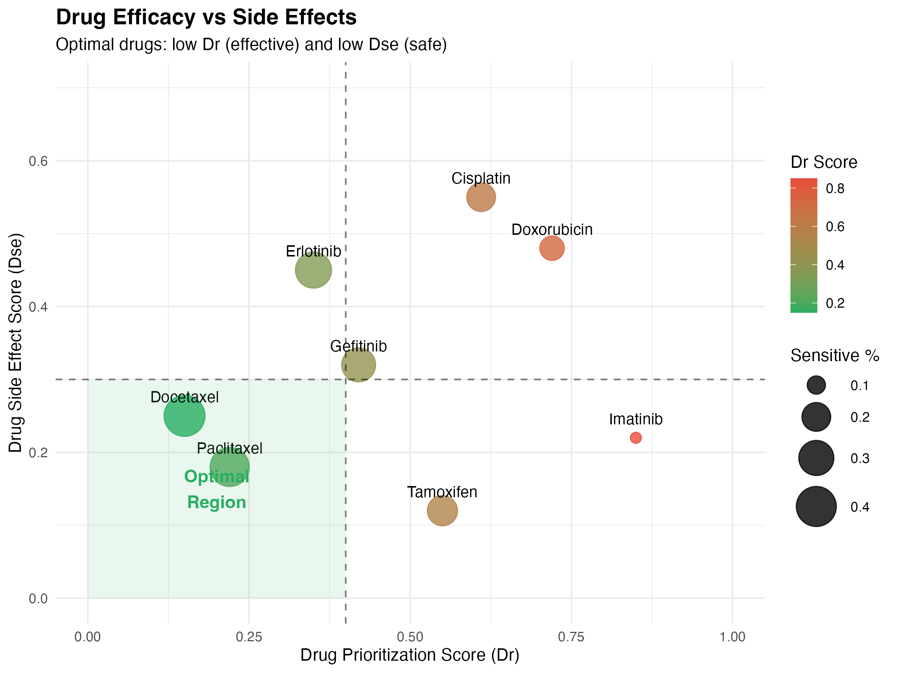
Drug efficacy vs side effects
4. Cell Proportion Analysis
Stacked Bar Plot
# Calculate proportions
prop_data <- umap_data %>%
filter(cell_label == "tumor") %>%
count(drug_label) %>%
mutate(pct = n / sum(n) * 100)
ggplot(prop_data, aes(x = "", y = pct, fill = drug_label)) +
geom_col(width = 0.6) +
geom_text(aes(label = sprintf("%.1f%%", pct)),
position = position_stack(vjust = 0.5),
color = "white", fontface = "bold", size = 5) +
scale_fill_manual(
values = c("sensitive" = scpharm_colors$sensitive,
"resistant" = scpharm_colors$resistant,
"other" = scpharm_colors$other),
name = "Drug Response"
) +
labs(
title = "Tumor Cell Composition",
subtitle = "Proportion of cells by drug response classification",
y = "Percentage (%)"
) +
theme_minimal() +
theme(
plot.title = element_text(face = "bold", size = 14),
axis.title.x = element_blank(),
axis.text.x = element_blank()
) +
coord_flip()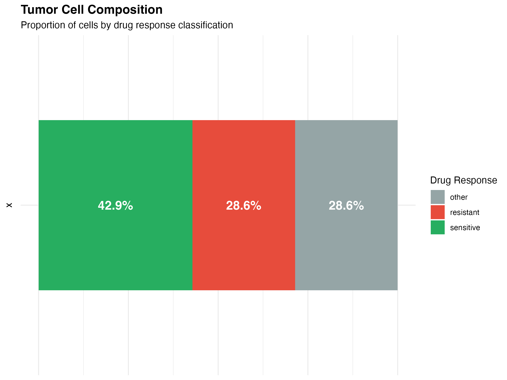
Cell proportion by drug response
Pie Chart
ggplot(prop_data, aes(x = "", y = pct, fill = drug_label)) +
geom_col(width = 1) +
coord_polar(theta = "y") +
geom_text(aes(label = sprintf("%s\n%.1f%%", drug_label, pct)),
position = position_stack(vjust = 0.5),
color = "white", fontface = "bold", size = 4) +
scale_fill_manual(
values = c("sensitive" = scpharm_colors$sensitive,
"resistant" = scpharm_colors$resistant,
"other" = scpharm_colors$other)
) +
labs(title = "Drug Response Distribution") +
theme_void() +
theme(
plot.title = element_text(face = "bold", size = 14, hjust = 0.5),
legend.position = "none"
)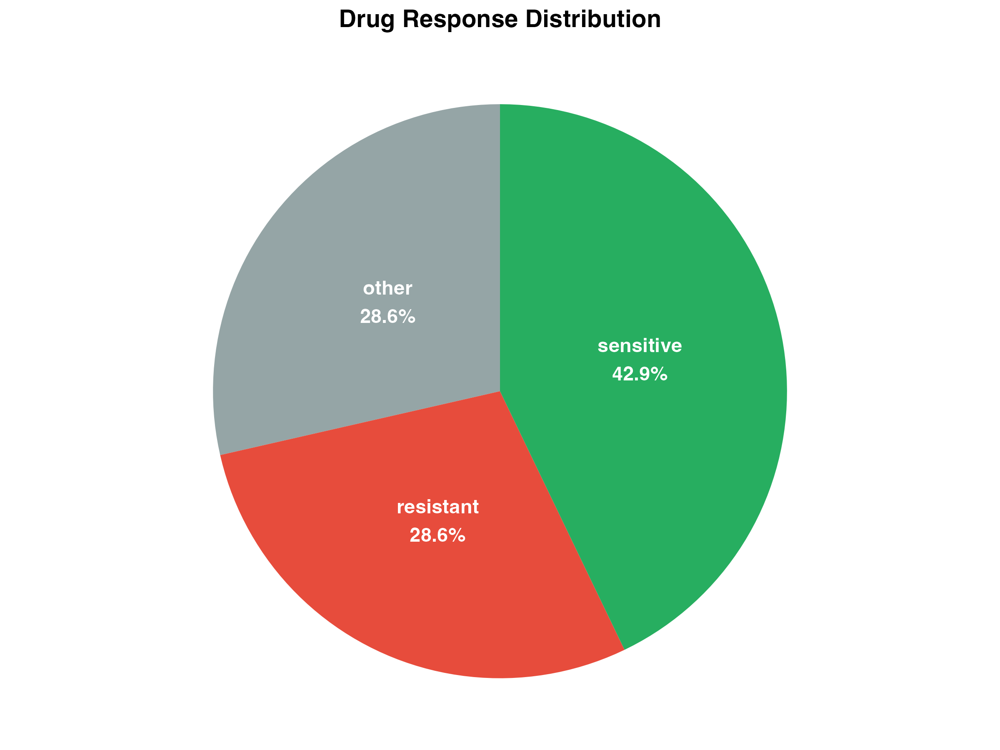
Pie chart of cell proportions
5. Multi-Drug Comparison
Heatmap of Drug Effects
# Simulate multi-drug data
set.seed(123)
drugs <- c("Docetaxel", "Paclitaxel", "Erlotinib", "Tamoxifen", "Cisplatin")
clusters <- paste0("Cluster_", 1:8)
heatmap_data <- expand.grid(Drug = drugs, Cluster = clusters) %>%
mutate(
Mean_NES = rnorm(n(), 0, 0.8),
Mean_NES = case_when(
Drug == "Docetaxel" & Cluster %in% c("Cluster_1", "Cluster_2") ~ Mean_NES + 1.5,
Drug == "Paclitaxel" & Cluster %in% c("Cluster_1", "Cluster_3") ~ Mean_NES + 1.2,
Drug == "Erlotinib" & Cluster %in% c("Cluster_4", "Cluster_5") ~ Mean_NES + 1.0,
Drug == "Cisplatin" & Cluster %in% c("Cluster_6", "Cluster_7") ~ Mean_NES - 1.0,
TRUE ~ Mean_NES
)
)
ggplot(heatmap_data, aes(x = Cluster, y = Drug, fill = Mean_NES)) +
geom_tile(color = "white", size = 0.5) +
geom_text(aes(label = sprintf("%.1f", Mean_NES)),
size = 3, color = "black") +
scale_fill_gradient2(
low = scpharm_colors$resistant,
mid = "white",
high = scpharm_colors$sensitive,
midpoint = 0,
name = "Mean NES"
) +
labs(
title = "Drug Sensitivity Across Cell Clusters",
subtitle = "Mean NES values per drug-cluster combination",
x = "Cell Cluster",
y = "Drug"
) +
theme_minimal() +
theme(
plot.title = element_text(face = "bold", size = 14),
axis.text.x = element_text(angle = 45, hjust = 1),
panel.grid = element_blank()
)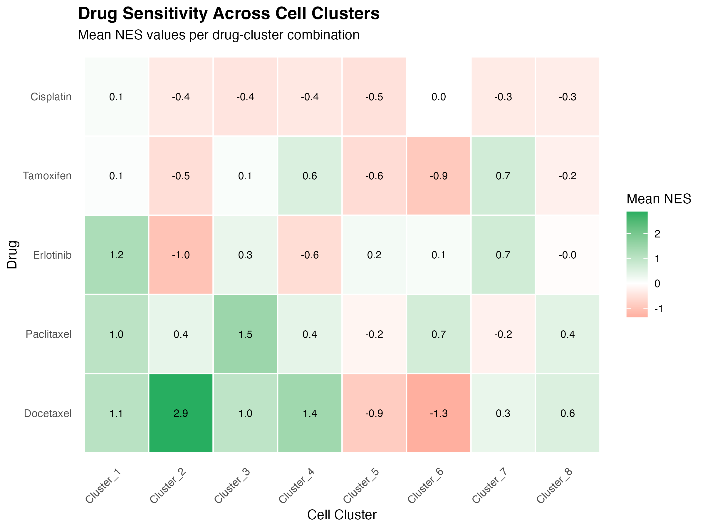
Heatmap of drug effects across cell clusters
6. Combined Dashboard
Summary Panel
# Panel A: UMAP with drug response
p1 <- ggplot(umap_data, aes(x = UMAP1, y = UMAP2, color = drug_label)) +
geom_point(size = 1, alpha = 0.7) +
scale_color_manual(
values = c("sensitive" = scpharm_colors$sensitive,
"resistant" = scpharm_colors$resistant,
"other" = scpharm_colors$other),
name = "Response"
) +
labs(title = "A. Drug Response UMAP", x = "UMAP 1", y = "UMAP 2") +
theme_minimal() +
theme(plot.title = element_text(face = "bold", size = 12),
legend.position = "bottom")
# Panel B: NES distribution
p2 <- ggplot(tumor_data, aes(x = NES, fill = drug_label)) +
geom_histogram(bins = 30, alpha = 0.7, position = "identity") +
scale_fill_manual(
values = c("sensitive" = scpharm_colors$sensitive,
"resistant" = scpharm_colors$resistant,
"other" = scpharm_colors$other),
name = "Response"
) +
labs(title = "B. NES Distribution", x = "NES", y = "Count") +
theme_minimal() +
theme(plot.title = element_text(face = "bold", size = 12),
legend.position = "bottom")
# Panel C: Drug ranking
p3 <- ggplot(drug_ranking, aes(x = DRUG_NAME, y = Dr, fill = Dr)) +
geom_col(width = 0.7) +
scale_fill_gradient(low = scpharm_colors$sensitive,
high = scpharm_colors$resistant,
guide = "none") +
labs(title = "C. Drug Ranking", x = "Drug", y = "Dr Score") +
theme_minimal() +
theme(plot.title = element_text(face = "bold", size = 12),
axis.text.x = element_text(angle = 45, hjust = 1))
# Panel D: Cell proportions
p4 <- ggplot(prop_data, aes(x = "", y = pct, fill = drug_label)) +
geom_col(width = 1) +
coord_polar(theta = "y") +
scale_fill_manual(
values = c("sensitive" = scpharm_colors$sensitive,
"resistant" = scpharm_colors$resistant,
"other" = scpharm_colors$other),
name = "Response"
) +
labs(title = "D. Cell Proportions") +
theme_void() +
theme(plot.title = element_text(face = "bold", size = 12, hjust = 0.5),
legend.position = "bottom")
# Combine panels
(p1 | p2) / (p3 | p4) +
plot_annotation(
title = "scPharm Analysis Summary",
subtitle = "Comprehensive visualization of pharmacological heterogeneity",
theme = theme(
plot.title = element_text(face = "bold", size = 16),
plot.subtitle = element_text(size = 12, color = "gray40")
)
)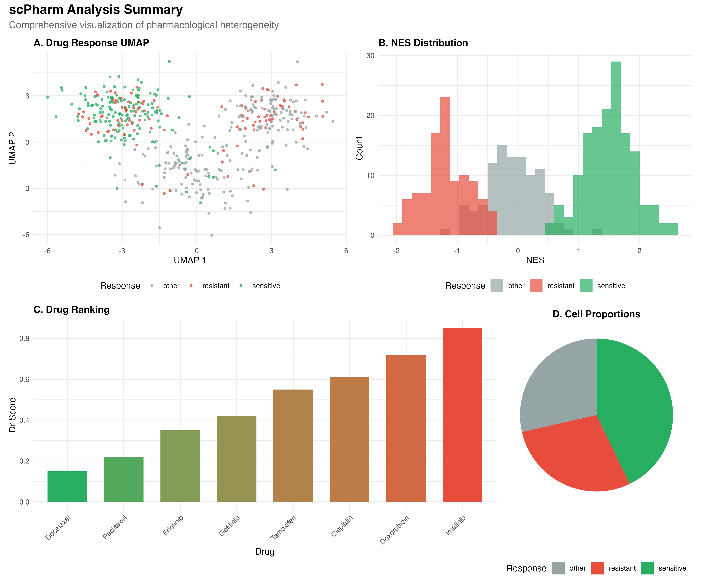
Combined analysis dashboard
Session Info
sessionInfo()
#> R version 4.4.0 (2024-04-24)
#> Platform: aarch64-apple-darwin20
#> Running under: macOS 15.6.1
#>
#> Matrix products: default
#> BLAS: /Library/Frameworks/R.framework/Versions/4.4-arm64/Resources/lib/libRblas.0.dylib
#> LAPACK: /Library/Frameworks/R.framework/Versions/4.4-arm64/Resources/lib/libRlapack.dylib; LAPACK version 3.12.0
#>
#> locale:
#> [1] C
#>
#> time zone: Asia/Shanghai
#> tzcode source: internal
#>
#> attached base packages:
#> [1] stats graphics grDevices utils datasets methods base
#>
#> other attached packages:
#> [1] patchwork_1.3.2 tidyr_1.3.2 dplyr_1.1.4 ggplot2_4.0.1
#>
#> loaded via a namespace (and not attached):
#> [1] gtable_0.3.6 jsonlite_2.0.0 compiler_4.4.0 tidyselect_1.2.1
#> [5] dichromat_2.0-0.1 jquerylib_0.1.4 systemfonts_1.3.1 scales_1.4.0
#> [9] textshaping_1.0.4 yaml_2.3.12 fastmap_1.2.0 R6_2.6.1
#> [13] labeling_0.4.3 generics_0.1.4 knitr_1.51 htmlwidgets_1.6.4
#> [17] tibble_3.3.1 desc_1.4.3 bslib_0.9.0 pillar_1.11.1
#> [21] RColorBrewer_1.1-3 rlang_1.1.7 cachem_1.1.0 xfun_0.56
#> [25] fs_1.6.6 sass_0.4.10 S7_0.2.1 otel_0.2.0
#> [29] cli_3.6.5 pkgdown_2.1.3 withr_3.0.2 magrittr_2.0.4
#> [33] digest_0.6.39 grid_4.4.0 lifecycle_1.0.5 vctrs_0.7.1
#> [37] evaluate_1.0.5 glue_1.8.0 farver_2.1.2 ragg_1.5.0
#> [41] purrr_1.2.1 rmarkdown_2.30 tools_4.4.0 pkgconfig_2.0.3
#> [45] htmltools_0.5.9